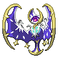

📖 英語版の図鑑説明
It steals the light from its surroundings and then becomes the full moon, showering its own light across the night sky.
日本語訳
周囲の光を奪い、満月となって夜空に自らの光を降り注ぐ。
📝 この図鑑文に出てくる英単語
| 英単語 | 意味 | 品詞 | レベル |
|---|---|---|---|
| steals | 盗む | 動詞 | 中3 |
| surroundings | 周り、環境 | 名詞 | 高校 |
| full | いっぱいの | 形容詞 | 中1 |
| showering | 浴びせている | 動詞 | 中3 |
文法ポイント It steals は現在形。図鑑では、そのポケモンがふだんから繰り返している習性を現在形で表します。主語が it なので動詞に s がついています。
💡 英語名「Lunala」の由来
英語名「Lunala」は、luna（ラテン語で「月」）、ala（ラテン語で「翼」）とlunula（三日月形）を組み合わせた名前と考えられている。
出典 Bulbapedia
✨ ルナアーラの豆知識
ルナアーラの名前は、発表より前に商標の書類から見つかっていた。そのときのローマ字は「Lunaala」で、英語名の Lunala とつづりが違っていた。
出典 Bulbapedia
📊 ルナアーラの種族値
HP137
こうげき113
ぼうぎょ89
とくこう137
とくぼう107
すばやさ97
合計 680
❓ よくある質問
- ルナアーラの英語名は？
- ルナアーラの英語名は「Lunala」です。
- ルナアーラの英語名「Lunala」の由来は？
- 英語名「Lunala」は、luna（ラテン語で「月」）、ala（ラテン語で「翼」）とlunula（三日月形）を組み合わせた名前と考えられている。
- ルナアーラは英語版の図鑑でどう説明されている？
- 「It steals the light from its surroundings and then becomes the full moon, showering its own light across the night sky.」と書かれています。日本語にすると「周囲の光を奪い、満月となって夜空に自らの光を降り注ぐ。」という意味です。
ルナアーラは第7世代（アローラ地方）のポケモンです。第7世代（アローラ地方）の英語名一覧 →